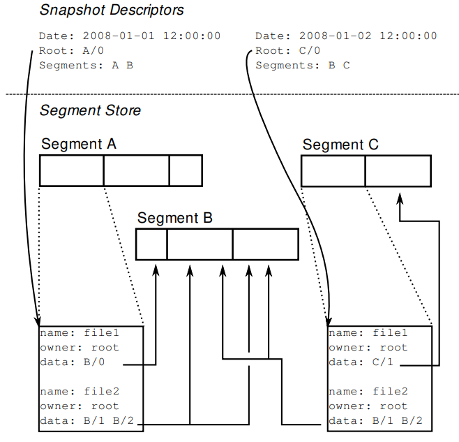

| Venue | Category |
|---|---|
| FAST'09 | Backup system |
Cumulus: Filesystem Backup to the Cloud1. SummaryMotivation of this paperDesignImplementation and Evaluation2. Strength (Contributions of the paper)3. Weakness (Limitations of the paper)4. Some Insights (Future work)
this approach allows greater storage and bandwidth efficiency, but reduce the portability (locking customers into a particular provider)
This paper intends to explore the thin cloud with a minimal interface (put, get, delete, list)
portable for any on-line storage services
All of these operations operate on entire files.
the interface is simple enough that it can be implemented on top of any number of protocols.
a file is never modified after it is first stored, except to delete it to recover space. do not modify files in place.
Why? Provide additional privacy when encryption is used: Aggregation hide the size as well as contents of individual files.
- metadata log: lists all files backed up
- the data itself.
Both two parties are broken apart into blocks, and these objects are then packed together into segments.
Snapshot descriptors: the one piece of data in each snapshot not stored in a segment
include a timestamp and a pointer to the root object.
 Starting with the root object stored in the snapshot descriptor and traversing all pointers found, a list of all segments required by the snapshot can be constructed.
Cumulus: does not clean in place.
Restore
Cumulus is primarily optimized for the complete restore.
3200 LoC c++ for core backup functionality. 1000 LoC python for restore, segment cleaning, and statistics gathering.
storing it locally reduces network bandwidth and improves access times. two parties: 1) a local copy of the metadata log, 2) SQLite database containing all other needed information,
Cumulus uses the local copy of the previous metadata log to quickly detect and skip over unchanged files based on modification time.
Database: keeps a record of recent snapshots and all segments and objects stored in them.
an index by content hash to support data deduplication.
when writing a snapshot, Cumulus records in the local database a summary of all segments used by the snapshot and the fraction of the data in each segment that is actually referenced.
additional functionality is implemented by calling out to external scripts. using gzip to provide compression using boto library to interact with AWS
Prototype evaluation
comparison with rdiff (rsync-style)
using boto Python library to interface with Amazon S3.
make Cumulus portable to nearly any type of storage server.
Since server-side deduplication is vulnerable to dictionary attacks to determine what data clients are storing, and storage accounting for billing purpose is more difficult.